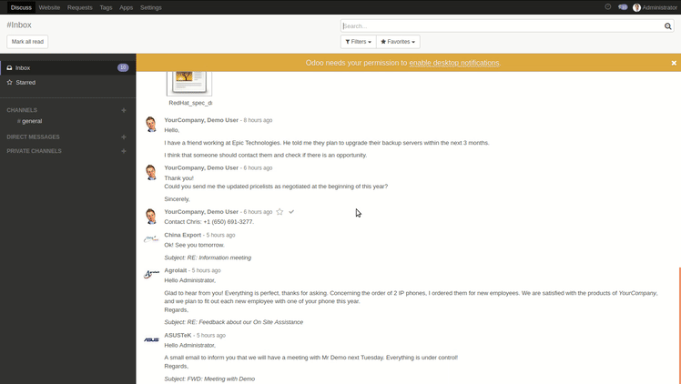

Website Service Desk (Broadcast messages)
Incident Management


Website Service Desk (Broadcast messages) is an application developed by the Center of Research & Development company.
It provides the ability to use broadcast messages on the Service Desk.
Create broadcast message in a few simple steps:

Create your own Bureaucrat ITSM database


This module is maintained by the Center of Research & Development company.
We can provide you further Odoo Support, Odoo implementation, Odoo customization, Odoo 3rd Party development and integration software, consulting services. Our main goal is to provide the best quality product for you.